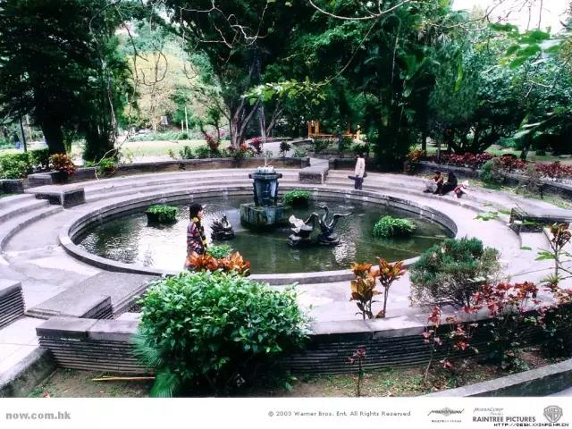
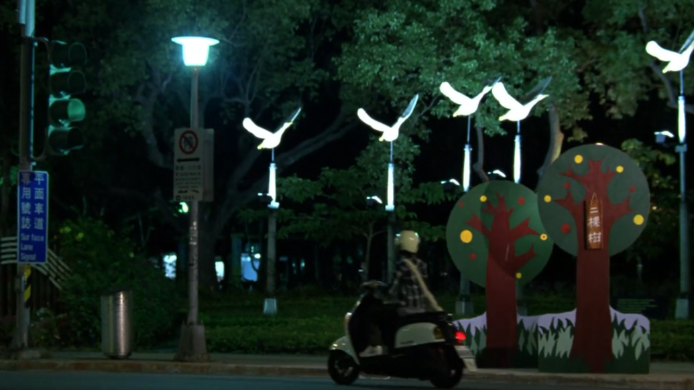

正文: 我来说说电影中出现的文学梗，不定期更新：
一，《我的少女时代》
结尾泪点处，徐太宇留下的录音播放在长椅上的林真心耳边，历历往事伴随着“小幸运”的旋律动情告白，结尾处却很突兀地冒出一句西班牙语：
Aquí te amo.（我爱你）
似乎有些不和谐啊，万一林真心不懂西班牙文呢？这一击必杀的效果就没了啊~
那么问题来了，为什么徐太宇要拽西班牙文？林真心懂不懂他的意思？
来，从爱情片模式切换到推理片模式。
在那个还能通过诗歌来把妹的年代，少女林真心尴尬“吐露心声”后，慌忙找出了一本书，希望徐太宇从中找到把妹灵感。
林真心并未翻阅诗集就向徐太宇推荐，可以推测应该是阅读过这本书的。影片开始的回忆里，有林真心卧室书架的镜头，定格后我拿了放大镜努力研究，勉强看清了有三本书：《白色山脉》（科幻小说）、《十字军》（历史）和《幽游白书》（漫画）。
再据林真心叙述：
彼时最大的享受是去书店。
综上：林真心是爱读书的女孩子。
回到林真心推荐的那本书。
这是智利国宝级诗人聂鲁达的诗集《20首情诗和一首绝望的歌》。
其中的第十八首是《我在这里爱你》。
它的原文西语第一句是：
Aquí te amo.
一生不羁放纵爱打架的徐太宇至少认真地读到了第十八首。
那时他应该不会意识到读书是为了更靠近林真心一些。
尽管他拿到书的第一反应是:
“谁看得懂？”
所以，徐太宇的超必杀成功了。
ps：聂鲁达说情诗描绘的女子对应的大海、太阳和影子。“她是夜空布满迷人星星的女神，每一页里都能见到她欢乐明丽的身影”，“她是眼睛无限温柔的女学生，身上散发着飘忽不定的校园爱情忍冬花般持久的芳香。”
so，徐太宇读的时候一定会想到林真心，不仅仅是因为她给的书。
二，《流星花园》
这个好玩的梗出现在了《流星花园》第14集（弯版）。
杉菜作客道明家，遭到了道明枫的处处刁难，脸立刻气成了饼状。
一屁股坐到了钢琴旁，胡乱按起了琴键。
xjbt
在大家开始狂躁不安，道明枫准备喊保安之时，曲调渐渐柔和。杉菜演奏起了神之难度的《梦中的婚礼》。
同时配乐诗朗诵：
“西方有位哲人说过：
女人啊华丽的金钻
闪耀的珠光为你赢得了
女皇般虚妄的想像
岂知你周遭只剩下势利的毒傲慢的香
撩人也杀人的芬芳
……”
这首诗是一不出名的法国诗人所作，作者并非杉菜所说的“哲人”，原题为《可怕的女人》，用到这里倒也算贴切，毕竟在这样的场合把一首《可怕的女人》献给可怕的女人的女人是多么可怕的女人啊。
无论如何，杉菜以一首超冷门的诗作和一首流行热曲唬住全场，这个逼装的必须给满分。
三，《情书》
如果你是个有故事的人，一定在看这部电影的当下哭过，就算当时没哭，你也一定会在三十岁、四十岁再看这部电影时哭得像条狗。
这些剧照你一定忘不了。
影片中藤井树（男）在图书馆里借了一本书，并在借书记录第一栏里写上名字：藤井树。
这本书是普鲁斯特的《追忆似水流年》，结合着书名的表意和对藤井树（女）默默的暗恋，藤井树（男）写上借书人姓名的时候算是深邃而纯洁的表白吧。
有趣的是，这本书其实并不如书名一般浪漫美好。普鲁斯特写作时已经疾病缠身，终日把自己关在卧室里，他怕光，失眠，哮喘，性取向独特，身边除了攒了一堆病历卡外一无所成。而他游离性的记忆宫殿却在这样的情况下雕琢出了这样一部迷狂华丽、晦涩难读的书籍。
《追忆似水流年》绝逼是提出书名就赢得大家频频点头文学装逼利器，你尽可以信口开河大谈对它的看法，反正也没人看完过。
很多人阅读它仅仅是因为《情书》这部电影，
或者是因为它貌似沉静的书名。
《追忆似水流年》第一个书名是《remembrance of things past》，取自莎士比亚的一首十四行诗，但痴迷于时光和记忆的普鲁斯特不满意，连续改了几版，最终确定为《A La Recherche du Temps Perdu》，英文书名为《In Search of Lost Time》。
它的诞生是如此的坎坷，内容又是如此私人风格化的无可言状，搁在一个中学图书馆的书架上应该无人问津吧。
也只有这样，藤井树才能在第一栏里，写上她的名字。
四，《英烈岁月》
这是一部优秀的战争电影，主演是一群未来会成了大明星的阳光型男。
这一群小伙子在执行任务飞上蓝天前，聚在一起说笑。
有人念起了一首诗。
而后大家都沉默了。
这首诗是爱尔兰伟大诗人叶芝的《一位爱尔兰飞行员的预知死亡》
在白云深处蓝天外
我知道死亡在那里等待
我与之搏斗的并非我所恨，我浴血保卫的也并非我所爱。
不是法律也不是责任让我披上战袍，
没有政治家和群众的欢呼，
只有一个冲动的我 把我送上九霄；
我反复思考 我反复比较，
今后的日子似乎变得渺小，
青春的气息在生与死之间缭绕！
飞行员们害怕死亡，而又从诗作中获得了坦然面对的力量和活着回来的坚定信念。
PS：因为“我是歌手”而广为流传的《当你老了》也是叶芝的诗歌；非常好听的歌曲《莎莉花园》的歌词也出自他手。
五，《非诚勿扰2》
《非诚勿扰2》最大的贡献莫过于向社会科普了黑色素瘤，以及李香山给自己办的葬礼上，他女儿朗诵的这首诗。

出处为：《班扎古鲁白玛的沉默》
你见，或者不见我
我就在那里
不悲 不喜
你念，或者不念我
情就在那里
不来 不去
你爱，或者不爱我
爱就在那里
不增 不减
你跟，或者不跟我
我的手就在你手里
不舍 不弃
来我的怀里 或者
让我住进你的心里
默然 相爱
寂静 欢喜
最后的一句“默然相爱，寂静欢喜”一度和“岁月静好”、“春风十里不如你”这些句子霸占了无数学生空间和QQ签名。
其诗的作者并非盛传的仓央嘉措，而是扎西拉姆.多多。
六，《向左走，向右走》
又是一部让有故事的人缠绵悱恻、感慨良多的爱情电影。
两个原本契合度100%的人擦肩而过了一百万次，他们是邻居，却一个出门向左走，一个向右走。他们在旋转门错过，在影院同一排的位置上错过，甚至打错过电话给对方，但一直没有机会聊上哪怕一句来确定这辈子的幸福。
有一天，天鹅泳池边的一阵微风改变了一切：
他们整理散落的纸页，聊起了一首诗，开始了一段“我们早该彼此认识”的曲折故事。
这首诗名字叫：《一见钟情》
我觉得电影名字也可以套用这个，然后副标题为：首先你得是金城武。
波兰伟大女诗人辛波斯卡的作品。
有一天，著名漫画家几米读到了这首诗，被打动后改编成了《向左走，向右走》的漫画，讲述了一段遇见和错过的爱情。
漫画又被拍成了电影。
因为诗歌写的就是：
他们彼此深信，是瞬间迸发的热情让他们相遇
这样的确定是美丽的 但变幻无常更为美丽
他们素未谋面 所以他们确定彼此并无任何瓜葛
但是从街道、楼梯、大堂传来的话语……
他们也许擦肩而过一百万次了吧……
我想问他是否记得 在旋转门面对面那一刹那
或是在人群中喃喃道出的“对不起”
或是在电话的另一端道出的“打错了”
但是我早知道答案
是的 他们并不记得
他们会很诧异 原来缘分已经戏弄他们很多年
时机尚未成熟 变成他们的命运
缘分 将他们推近
分离 阻挡他们的去路
忍住笑声 然后闪到一旁
……
PS：陈绮贞老师的《沙漏》灵感也来自于辛波斯卡，她说“在辛波斯卡的诗里，我知道少女的力量，我知道无辜的杀伤，我知道接二连三的疑问可以组合成一首停不了旋转的舞码。”
七，《四个婚礼和一个葬礼》
英国优质轻喜剧电影，男主角朋友的葬礼上，逝者的好基友朗诵了一首感人诗歌来表达哀思：
他们是真的好基友
诗歌内容为：
《葬礼蓝调》停止所有的时钟，切断电话，
给狗一块浓汁的骨头，让他别叫，
黯哑了钢琴，随着低沉的鼓，
抬出灵柩，让哀悼者前来。
让直升机在头顶悲旋，
在天空狂草着信息他已逝去，
把黑纱系在信鸽的白颈，
让交通员戴上黑色的手套。
他曾经是我的东，我的西，我的南，我的北，
我的工作天，我的休息日，
我的正午，我的夜半，我的话语，我的歌吟，
我以为爱可以不朽，我错了。
不再需要星星，把每一颗都摘掉，
把月亮包起，拆除太阳，
倾泻大海，扫除森林,
因为什么也不会，再有意味。
作者为英国诗人W.H.奥登，电影中之所以选用他的诗歌应景，还因为他也是一位基友（当然，似乎欧美文坛就没几个不是基友），他曾和恋人双宿双飞，共同著作，探讨诗歌和人生的奥秘。
八，《约会，恋爱到底是什么》
最后一个梗来自于一部日剧。
放它到最后，是因为我们快到双11佳节了。
剧中有这样一句台词：
那么，如果在散步时，有人支支吾吾地对你说了这样一句话“今晚的月色好美啊”，一定要好好珍惜他。
因为，这是个很有名也很温暖的梗。
夏目漱石当老师时，让学生把英文的“I Love You”翻译成日文，学生直译为“我爱你”，夏目漱石沉吟片刻，告诉学生，说“月が绮丽ですね（今晚的月色真美）”就足够了。
当然，肯定也有人会这样回答：
那么，我只能说：
双11快乐！
___________________________更新的分隔线—————————————————————
我来补充了。
台湾爱情电影《听·说》的一个文学梗。
这是一个关于水鸟的故事。
黄天阔形容秧秧是一只水鸟，因为她跑路的样子有点奇怪（其实是很可爱）。
秧秧的姐姐也曾说她像水鸟。
而且水鸟随季节迁徙，姐姐希望她能不被固定在某个地方，能找到属于自己的自由。
黄天阔和秧秧在零钱事件吵架后，独自回到小饭馆，一边吃着馄饨面，一边阅读着一本书。
努力地用手语练习诗句的表达。

这首诗和《我的少女时代》一样，同样出自聂鲁达的《二十首情诗和一首绝望的歌》。
诗文如下：
为了使你听见我
我的话语
有时细得
如同沙滩上海鸥的足迹项链 醉酒的铃铛
献给你葡萄般光滑的手
而我望着自己远去的话语
它们其实更属于你
它们如常春藤般攀爬上我的旧痛
它们如是攀爬上潮湿的墙壁
你是引发这血腥游戏的罪人
它们纷纷逃离我阴暗的巢穴
你充满一切，充满一切
它们先于你居住于你所占据的孤独
它们比你更习惯于我的悲伤
现在我要它们说出我想对你说的话
为了使你听见我如同我想要你听见的那样
苦恼之风依然卷走它们一如往昔
梦的飓风有时仍然将它们推到
在我痛苦的声音里你聆听其他声音
出自原来嘴巴的哭声，因古老恳求而流的血
爱我吧，伴侣 别弃我 跟随我
跟随我，伴侣 在这苦恼的波上
但我的话语被你的爱染上颜色
你占据一切，占据一切
我要把它们编成一条无尽的项链
献给你白皙，葡萄般光滑的手
他的心思细腻得确实如同沙滩上海鸥（水鸟）的足迹，把自己扮作了树人；

赠送给秧秧礼物。
影片的最后，在秧秧家里，有很多水鸟静静地陈列在桌子上。
那是秧秧对他的思念。
欢迎关注微信公众号：big7days